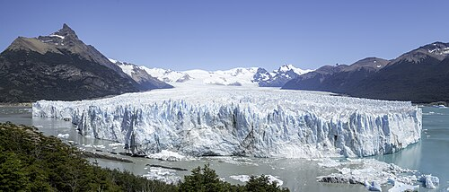

Glaciar Perito Moreno
El más accesible y el más famoso: frente de 5 km y paredes de hasta 74 m sobre el Lago Argentino. A 78 km del pueblo, se llega en colectivo, remise o excursión.
- Pasarelas y miradores — camino de costa libre, sin guía.
- Mini trekking sobre el hielo — requiere reserva previa.
- Navegación frente al hielo — acerca la embarcación al frente.
- Big Ice — trekking de día completo, exigente.